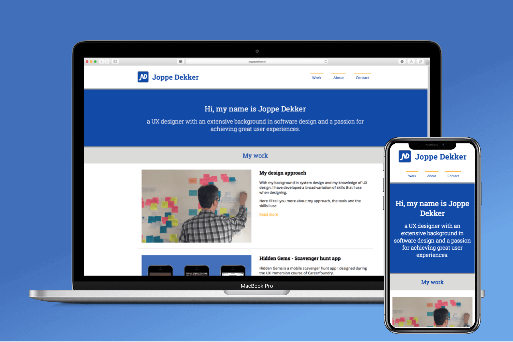

Even though I have lots of experience in designing applications, I didn’t have an online portfolio. I really wanted to create an online presence to present my skills as a designer to potential employers. During the course of Front-end development for designers, I designed my own portfolio website and created it myself with HTML, CSS, and JavaScript.
Why create a portfolio website from scratch with HTML, CSS, and JavaScript?
For me, understanding and learning frontend development is a must! It is getting more and more important for designers to understand how HTML, CSS, and JavaScript work. With knowledge on how a website is developed, it is easier to see the possibilities. Besides that, the borders between designing and developing products are fading. With software like Framer, you can design wireframes with interactive animations and automatically generate code to implement it. InVision has a special inspect mode, that helps in the collaboration between designers and developers and more and more companies ask that designers can prototype in HTML, CSS, and JavaScript.
In other words, knowing how frontend development works is a must!
I first started by thinking about my public: who is going to look at my portfolio website and what do they want to see? The portfolio site should be a supplement to my CV and other online presences. When looking at other design portfolios, I all saw that they were really simple and with a focus on the project they did and the story behind it. I decided on the following categories:
As I would immediately start to develop the website in HTML, CSS, and JavaScript, I chose colors and the fonts at the start of the project. I chose a blue color as the primary color to use. This is a color that I really like and the color itself is associated with trust. As a complementary color, I used orange – this shows confidence and optimism and can be used for call-to-action buttons like: “Contact me”.

Chosen color pallette
Now that I knew which content I wanted to add, I started developing the site. I first made a low fidelity wireframe of how my site could look. Then, I worked out all the content in HTML, making the setup for the pages, thinking about the navigation, information, and pictures to be shown. When I started adding code in CSS, the website was getting a more clear form.
The hardest part was deciding on which colors I wanted to show where. I had some thoughts on this, but trying it out in CSS didn’t give the results I wanted. I decided to take a step back and created high-fidelity wireframes in Sketch to get a better view of how the page could look.

A high-fidelity wireframe in Sketch
Of course, the website should be responsive. The site should look great on mobile devices and tablets. By using media queries in my CSS-code, it was really easy to define what should change when going to a smaller screen.
I really like the possibilities CSS has. With a few lines of code, you can make your website more interactive. For example: changing the colors of a button when hovering over it or making an animated SVG. JavaScript also gives a lot of new possibilities on how users can interact with the website.
I created a usability test plan and recruited participants. The participants all have an age between 30 - 45 years old and have a job related to design or IT.
In the final iteration of the project, I fixed some of the different usability issues and bugs that I found during the usability test. I checked the color scheme with the accessibility checker, there I found out that the orange links on a grey background are not a great combination.
I checked the code if it met the W3C quality standards and made sure the code was looking good, simple and correct using CSS and JS linters. I tested if the portfolio worked in Safari, Chrome, Firefox and in Microsoft Edge. I also tested the mobile versions (Galaxy S5, Pixel, iPhone 8 and iPad) via Chrome.
Hurray! My portfolio site is live and I’m really proud of it. It looks and works great.
During the implementation of the website, I checked thoroughly if everything worked. I did another cross-browser test to check the implementation. While it works on the platforms tested, I did find out that the menu is not showing correctly on my iPhone SE – the menu is not shown correctly there. I’ve added this bug to my backlog.
The backlog contains bugs and changes that I will pick up during future iterations. This way I can improve the site and its design even further by making small changes and improvements. For those people who are curious what my portfolio looks like, you can find a link to the website here: www.joppedekker.nl

The scrum backlog with bugs and changes